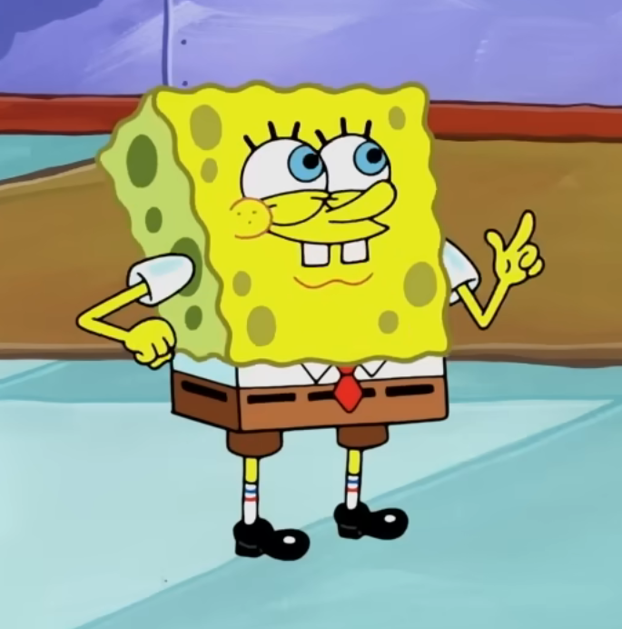
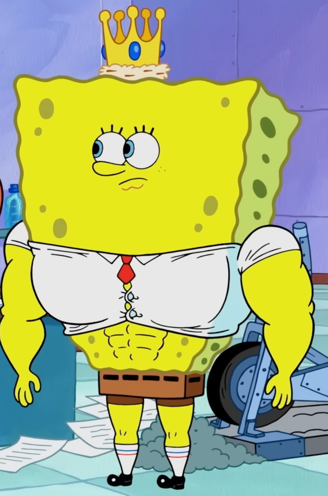

The Deep End
This is where things get a little more interesting. Drag sliders, watch progress bars fill up, and feel the motivation ripple through you like a current through Goo Lagoon.
The Larry's Gym Glow-Up
Drag the handle left or right to compare life before and after joining Larry's Gym. The difference speaks for itself.


Monthly Goal Tracker
Every Larry's Gym member tracks their monthly goals. Here's how the crew is doing this month. The bars animate in as you scroll - hit Reset to watch them go again.
Ready to Start Your Own Glow-Up?
The progress bars above could be yours. Larry is waiting, and Larry does not wait for anyone.
Join the Crew Today